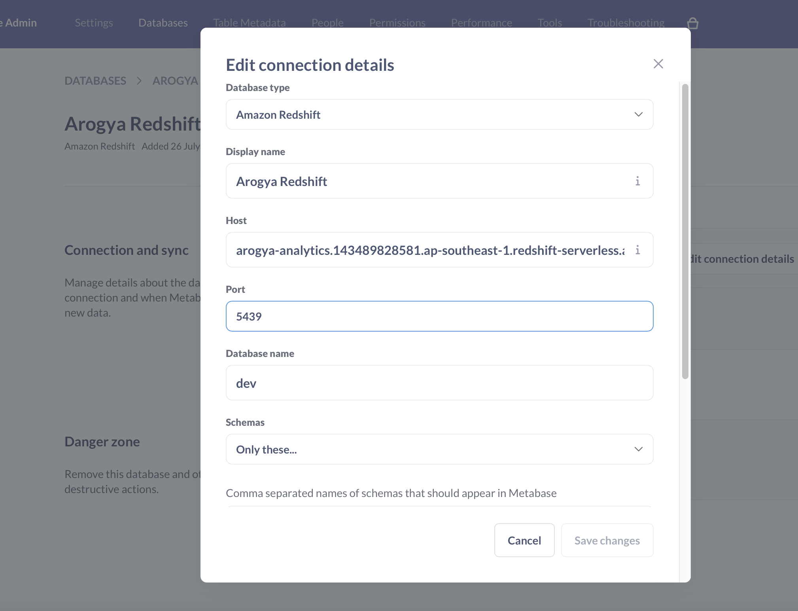
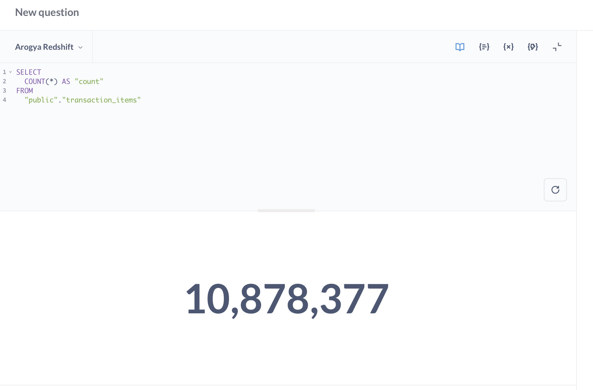
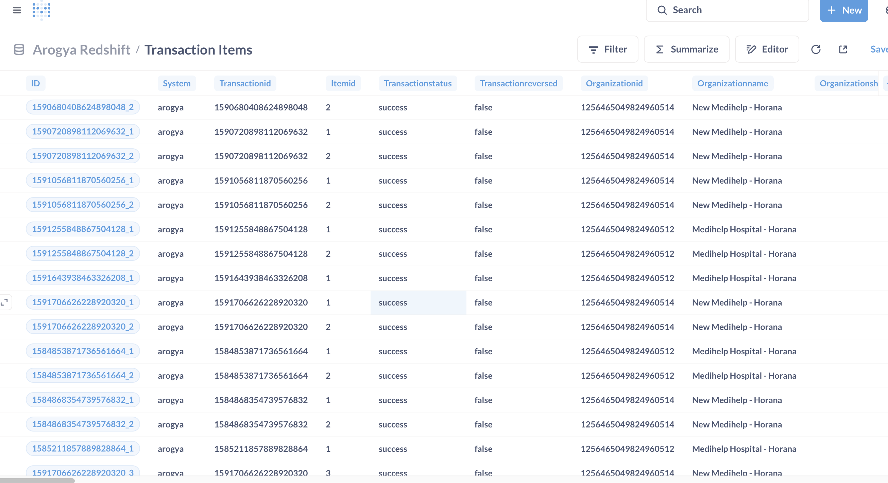

Migration from SnappyData/Spark to Amazon Redshift Serverless
In this post, I’ll walk through how we replaced our legacy SnappyData (a Spark-based analytics platform) with Amazon Redshift Serverless and integrated it with Metabase for smooth, SQL-friendly analytics.
🚨 Why We Migrated
- SnappyData is no longer maintained – Open source community has faded out.
- Limited SQL Support – Spark SQL didn’t support full ANSI SQL, causing difficulty for users.
- Manual cluster management – High operational overhead and memory issues.
✅ Why Amazon Redshift Serverless
- Fully managed and serverless.
- Supports full ANSI SQL.
- Scales with usage – cost control via RPU adjustments.
- Easy to connect with tools like Metabase.
🔧 Step-by-Step Setup
1. Create Redshift Serverless
- Enable public access.
- Add appropriate inbound rule in VPC security group.
- Change default
base capacity from 128 RPU (costly) to 4 RPU.
- Consider 1-year or 3-year reservation to optimize costs.
2. Create Database and Tables
CREATE TABLE dev.public.transaction_items (
id VARCHAR NOT NULL,
system VARCHAR NOT NULL,
transactionId VARCHAR NOT NULL,
itemDescription VARCHAR(2500),
itemChargingType VARCHAR,
itemAmount DECIMAL(16,2),
patientGender VARCHAR,
patientDateOfBirth DATE,
patientLanguage VARCHAR,
patientMobileContactNumber VARCHAR
);
3. Clean CSV Files
Redshift doesn't support : for milliseconds in timestamps. Format needs to be HH:MM:SS.sss.
# Fix broken quoted delimiters
sed -E 's/"([|]|\s*$)/\1/g' transaction_items.csv > transaction_items_cleaned.csv
# Fix timestamp format
sed -E 's/([0-9]{2}:[0-9]{2}:[0-9]{2}):([0-9]{3})/\1.\2/g' transaction_items-1753471509266.csv > transaction_items.csv
4. Load Data from S3
COPY dev.public.transaction_items
FROM 's3://arogya-analytics/transactions-items/transaction_items_cleaned3.csv'
IAM_ROLE 'arn:aws:iam::143489828581:role/service-role/AmazonRedshift-CommandsAccessRole-20250726T052415'
FORMAT AS CSV
DELIMITER '|'
IGNOREHEADER 1
REGION AS 'ap-southeast-1';
5. Debug Data Load Issues
SELECT *
FROM sys_load_error_detail
ORDER BY start_time DESC;
6. Deploy Metabase via Docker
Visit: Metabase OSS to copy Docker command and run the container.
7. Connect Metabase to Redshift
Use values from Redshift dashboard:
- Host
- Port (5439)
- Database name:
dev
- Username / Password

Metabase connected to Amazon Redshift
🎯 Results
- Successfully loaded 10.8 million+ rows into Redshift.
- Visualized using Metabase SQL editor and dashboards.

Query result showing total count from Redshift

Sample transaction records in Metabase
📌 Summary
Migrating from SnappyData to Amazon Redshift Serverless significantly improved query flexibility, reduced infrastructure management, and empowered our users with Metabase visual analytics.